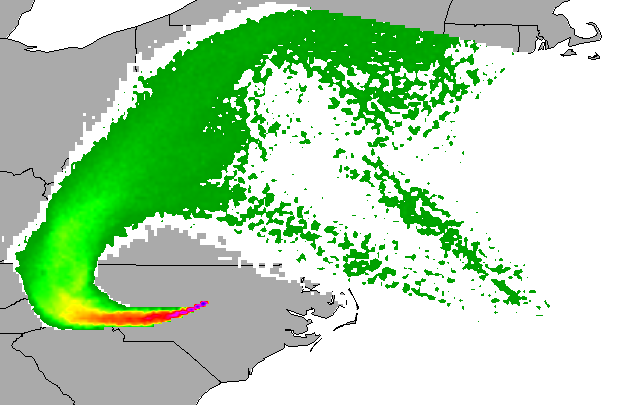

Process-based diffusion simulation
Helena Mitasova, Anna Petrasova, Vaclav Petras
Learning objectives
- duality of particles and fields
- diffusion
- applications
Diffusion and flow
Foundation of many geospatial models of natural and socioeconomic processes
Relate change in time to change in space

Images from Laura Pagano and Waldo Tobler presentations
Duality of particles and fields
Modeled quantities can be represented by
- fields - continuous distribution (scalar, vector, tensor)
- particles - discrete sampling of fields
Corresponce between the two representations:
density of particles - field $f(r)$
Duality of particles and fields
Process can be modeled as
- evolution of fields
- evolution of spatially distributed particles


Path sampling method uses this duality to solve the governing equations
Monte Carlo methods
Monte Carlo methods use randomness and statistical estimators
to solve a variety of problems:
- calculations of complicated expressions, eg, multi-variate integrals
- finding approximate solutions of optimization or other problems that are intractable
by algorithms with polynomial scaling (eg, can be NP-hard)
- sampling/generating possible scenarios in uncertainty and error propagation studies
- using stochastic processes to simulate processes that can be stochastic,
deterministic or a mix of both.
Monte Carlo methods: random walks
Walkers move in random directions
Markov Chain Models (MCM):
- Brownian motion (molecules in air, pollen in fluid)
- Heat conduction
- Stock prices
- Diffusion
Diffusion equation
-
- Fick's law in 1D:
flux $f$ is a function of change in density $n$ (concentration), empirical observation
$$ f(x,t) = -D_0 {\partial n(x,t) \over \partial x}$$
- Continuity equation, mass preservation:
change in density over time at a location = inflow and outflow of material at this location
$$ {\partial n(x,t) \over \partial t} + {\partial f(x,t) \over \partial x} = 0 $$
- Diffusion equation:
change in density over time at location $x$ is proportional to change in gradient at this location
$$ {\partial n(x,t) \over \partial t} = D_0 {\partial^2 n(x,t) \over \partial x^2} $$
-
$f(x,t)$ is flux, $n(x,t)$ is density, $x$ is location and $t$ is time, D_0 is diffusion constant
Fundamental solution
- Given a unit impuls $\delta(x-x_0)=n(x,t=0)$ the fundamental solution of
diffusion equation is
-
$$ n(x,t) = {1 \over \sqrt{4\pi D_0 t}} e^{{-(x-x_0)^2} \over ({4D_0t)}}$$
- a Gaussian with $ N(x_0, \sigma^2 = 2D_0t) $
Green's function for diffusion
Stochastic method of solution
Diffusion examples
- Physics: drop of milk in coffee, heat propagation,
- Diffusion in geosciences: diffusive hillslope evolution,
- some financial market effects,
- your examples
Diffusion with drift
see written notes
Applications
- natural and socio-economic processes
- generalize the concept - define appropriate gradient field and density
- how does your research relate to diffusion, dispersal, flux and related processes?
growing cities - inverse of population density or economic opportunity fields